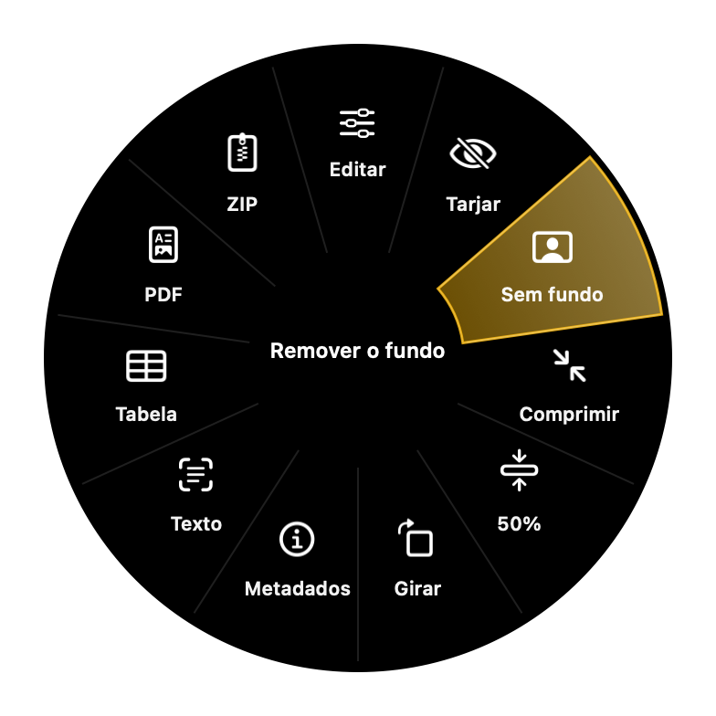
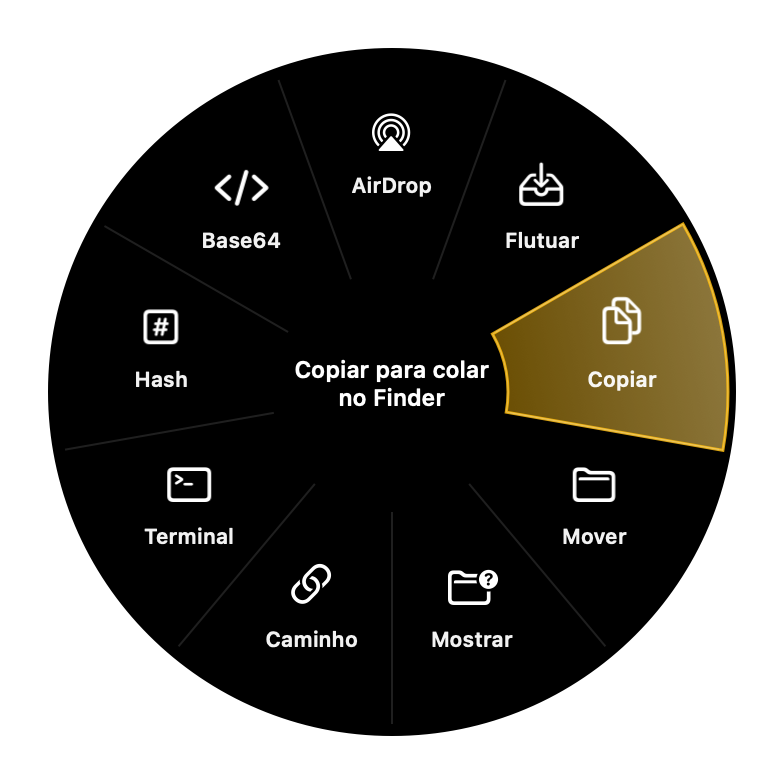

Arraste.
Aperte.
Pronto.
Comece a arrastar um arquivo, aperte uma tecla e uma roda aparece em volta do cursor. Solte numa fatia e o arquivo sai convertido, comprimido, tarjado ou assinado, sem abrir nenhum programa.
Tudo acontece no seu computador. Nenhum arquivo vai para a internet.



Três teclas, três rodas.
A roda muda conforme o arquivo: uma foto mostra ferramentas de foto, um PDF mostra ferramentas de PDF. Ela usa a cor de destaque do seu sistema.
Converter
Troca o formato: foto para PNG ou HEIC, vídeo para MP4 ou GIF, PDF para Word, planta DWG para PDF.
Windows: ShiftFerramentas
Mexe no arquivo: editar, comprimir, tirar o fundo, tarjar dados, assinar PDF, cortar vídeo.
Windows: CtrlAções
Leva o arquivo para algum lugar: AirDrop, prateleira flutuante, outra pasta, Terminal, hash.
Windows: AltUm canivete inteiro dentro de uma roda.
Mais de 50 formatos e mais de 140 funções, de foto a planta de engenharia.
Edite sem abrir um editor
- Ajustes de luz e cor, 8 estilos, nitidez, granulação e redução de ruído
- Recortar, anotar com setas, textos e números
- Fundo em cor, gradiente ou outra imagem, com margem e sombra
- Comprimir até 200 KB, 500 KB, 1 MB ou o tamanho que quiser
- Tirar o fundo, copiar o texto (OCR) e ler QR Code
- Colagens em grade, linha, coluna ou destaque
O PDF inteiro na ponta do cursor
- Organizar páginas numa grade: reordenar, girar, duplicar, excluir
- Assinar com a assinatura desenhada ou tirada de uma foto
- Tarja definitiva, que apaga o texto de verdade
- Juntar, separar e comprimir
- Para Word, Excel, PowerPoint, EPUB, Markdown ou imagens até 300 DPI
Corte, junte, acelere
- MP4, MOV, WebM, MKV, AVI, WMV e GIF
- Cortar, dividir, juntar e enquadrar em 9:16
- Velocidade de 0,25× a 4×
- Ocultar rostos e placas em trechos
Som no ponto certo
- MP3, M4A, WAV, FLAC, OGG, Opus e AIFF
- Normalizar, cortar e juntar faixas
- Bipe de censura marcado na onda
- Vídeo com a forma de onda animada
Texto, planilha, slide
- Word, PDF, ODT, HTML, Markdown e EPUB
- Planilhas para CSV, PDF e JSON, com todas as abas
- PPTX para PDF sem o PowerPoint
- Narrar o documento em áudio
Planta DWG sem AutoCAD
- DWG e DXF para PDF vetorial, SVG, PNG, JPG e TIFF
- Cotas, hachuras, blocos, textos e tracejados
- Trocar a versão do DWG e salvar para SketchUp
- STEP e IGES para STL, com prévia em imagem
Os utilitários de todo dia
- SVG para React ou SwiftUI, e PNG em @1x, @2x e @3x
- Otimizar SVG sem mudar o desenho
- Hash SHA-256, MD5 e SHA-1, com conferência
- Base64, Data URI, QR Code, JSON ↔ planilha
- Fontes TTF e OTF para WOFF e WOFF2
A tarja que não volta.
O Gomo procura CPF, CNPJ, e-mail, telefone e cartão sozinho. Quando você salva, o texto embaixo da tarja é apagado e a página é refeita, então ninguém consegue copiar ou recuperar o que foi coberto. Depois ele confere se ficou mesmo limpo.
Na mesma janela você assina: desenhe com o trackpad ou tire a assinatura de uma foto do papel.
Mande a planta para quem não tem AutoCAD.
Arraste o DWG, aperte ⇧ e solte em PDF. O Gomo desenha linhas, arcos, cotas, hachuras, blocos e textos com traço fino de 0,05 mm, pronto para imprimir ou mandar pelo WhatsApp.
Também converte DXF para DWG, troca a versão do DWG e gera o modelo do SketchUp.
Seus arquivos não saem do computador.
Nada de site de conversão, nada de upload, nada de conta. Contratos, documentos com CPF, fotos da família e plantas de cliente são processados ali mesmo, e o Gomo funciona até sem internet.
Mac e Windows.
As mesmas rodas nos dois sistemas. Algumas funções que dependem do macOS, como tirar o fundo e o OCR, existem só no Mac.
Mac
- Sistema
- macOS 13 ou mais novo
- Processador
- Apple silicon (M1 em diante)
- Teclas
- ⇧ ⌘ ⌃
- Só no Mac
- AirDrop, sem fundo, OCR, narrar, SketchUp
Windows
- Sistema
- Windows 10 ou 11
- Processador
- Intel/AMD (x64) ou ARM
- Teclas
- Shift Ctrl Alt
- Atualização
- automática, uma vez por dia
Antes de baixar.
Precisa de internet?
Não. Todas as conversões e ferramentas rodam no seu computador. A internet só é usada no Windows para procurar atualização, uma vez por dia.
Funciona arrastando de qualquer lugar?
Sim: do Finder ou Explorador, da mesa, do navegador, do e-mail. Basta começar a arrastar e apertar a tecla antes de soltar. A roda também aceita as teclas 1 a 9, as setas, Enter e Esc.
Onde fica o arquivo novo?
Ao lado do original, com outro nome. Se a pasta não deixar gravar, ele vai para Downloads. O original nunca é alterado.
Preciso instalar mais alguma coisa?
Para vídeo e áudio o Gomo usa o ffmpeg; no Windows ele mesmo instala quando precisa. Para DWG e STEP existe um gerenciador de extras que baixa o que falta com uma barra de progresso.
Dá para trocar as teclas?
Dá. No menu do ícone você escolhe qual tecla abre cada roda.
Abre PPTX e planilhas sem o Office?
Sim. O Gomo lê e desenha PPTX, XLSX, DOCX e ODS sozinho. Só o PPT antigo e o Keynote precisam do app instalado.